121 — Logs, métricas, trazas y eventos como señales
Parte: 10 — Observabilidad, SRE y confiabilidad
Nivel: avanzado · Horas estimadas: 4
Laboratorio: observability · Estado: EXECUTABLE_CORE
🎯 Propósito
Abrir la parte con la cifra que la cierra la 120: de veintiún problemas, tres se detectaron por una alerta y dieciocho cuando ya habían hecho daño. Esta clase establece el material con el que se corrige eso: cuatro señales, cada una con una pregunta que responde y otras que no puede responder. Y defiende una tesis concreta: la cuarta —qué cambió y cuándo— es la que cierra más incidentes en menos tiempo, y es la única que casi nadie instrumenta.
📚 Resultados de aprendizaje
Al finalizar podrás:
- Asignar a cada señal la pregunta que responde y las que no.
- Correlacionar las cuatro con los mismos identificadores.
- Instrumentar los cambios como señal de primera clase.
- Prever el coste de una señal en el momento de emitirla, no de consultarla.
- Decidir el muestreo sabiendo qué preguntas está descartando para siempre.
🧩 Conceptos centrales
| Concepto | Comprensión verificable |
|---|---|
métrica |
Valor numérico agregado en el tiempo. Barata y comparable; no lleva contexto de ningún caso concreto. |
traza |
Recorrido de una petición por los servicios que la atienden, con tiempos por tramo. Responde dónde se fue el tiempo. |
registro |
Línea con detalle de lo ocurrido en un punto. Es la señal más expresiva y la más cara por volumen. |
señal de cambio |
Registro de lo que se modificó: despliegues, interruptores, configuración, escalados, migraciones. Responde «por qué ahora». |
correlación |
Poder saltar de una señal a otra sobre el mismo caso, porque comparten identificadores. |
coste en la emisión |
El precio de una señal lo fija lo que se emite, no lo que se consulta. Guardarlo todo por si acaso es la causa principal de la factura. |
muestreo |
Quedarse con una parte de las trazas. Decide qué preguntas se podrán hacer después, porque lo no emitido no existe. |
🧠 Modelo mental
La confiabilidad es una característica del servicio percibido por usuarios; SRE la administra con objetivos explícitos y presupuestos de error.
Aplicado a esta clase, separa siempre cuatro planos: intención (qué necesita el usuario), configuración (qué declaramos), estado observado (qué existe de verdad) y evidencia (cómo sabemos que cumple). Confundirlos produce diseños que se ven correctos en un diagrama pero fallan al operar.
🗺️ Flujo de razonamiento

📖 Desarrollo
1. Cuatro señales, cuatro preguntas
La clasificación útil no es por formato sino por la pregunta que cada una contesta:
MÉTRICA ¿está pasando? ¿cuánto? ¿va peor que ayer?
responde agregados, tendencias, comparaciones
no responde qué le pasó a esta petición concreta
coste bajo por dato, y crece con la CARDINALIDAD (clase 123)
TRAZA ¿por dónde pasó y dónde se fue el tiempo?
responde la cadena de llamadas de un caso, con tiempos
no responde con qué frecuencia ocurre, si está muestreada
coste medio, y se controla con el muestreo
REGISTRO ¿qué pasó exactamente en este punto?
responde el detalle: valores, decisiones, errores
no responde nada agregado sin procesarlo antes
coste alto, proporcional al VOLUMEN
SEÑAL DE CAMBIO ¿por qué ahora?
responde qué se modificó y cuándo
no responde el efecto; hay que cruzarla con las otras
coste casi nulo: son unos cientos de eventos al día
Y la asimetría que justifica la tesis de la clase: la cuarta es la más barata de todas y la que menos se instrumenta.
La razón por la que funciona tan bien es estadística: la mayoría de los problemas empiezan porque algo cambió, y las partes 08 y 09 han multiplicado las cosas que pueden cambiar sin desplegar código:
despliegue de una versión clase 102
cambio de un interruptor clase 105
confirmación en el repositorio de entorno clase 103
escalado de instancias o de consumidores clases 113, 117
cambio de una regla en la puerta de entrada clase 118
migración de datos o cambio de esquema clases 109, 115
caducidad de una credencial o de un certificado
rotación de una clave
ventana de mantenimiento del proveedor
Y lo que hace falta es poco: una serie temporal de eventos con quién, qué y cuándo, dibujada encima de los gráficos.
{"momento":"2026-08-03T09:12:04Z","tipo":"interruptor",
"que":"recomendaciones-v3","de":"5%","a":"100%",
"quien":"…","referencia":"…"}
La pregunta que responde —«¿qué cambió en los diez minutos anteriores al problema?»— es la primera de cualquier incidente, y sin esta señal se contesta preguntando por los canales del equipo.
2. Vigilar y poder preguntar
Hay dos actividades distintas que se llaman parecido y conviene separar:
VIGILAR preguntas conocidas de antemano
paneles y alertas escritos antes de que pase nada
→ responde «¿esto que sé que puede fallar, está fallando?»
PODER PREGUNTAR preguntas nuevas sobre datos ya recogidos
→ responde «¿qué demonios está pasando ahora?»
Y los dos hacen falta. Lo que no funciona es esperar que uno haga el trabajo del otro:
solo vigilancia solo se detectan los fallos que alguien anticipó
y los de la parte 09 no los anticipó nadie
solo exploración nadie está mirando a las 3 de la madrugada
Y la propiedad que separa un sistema del que se pueden hacer preguntas nuevas de uno del que no:
¿puedo filtrar por una dimensión que no había previsto?
versión, cliente, región, tipo de dispositivo, plan, ruta
→ si la dimensión no se emitió, la respuesta es no, para siempre
Y de ahí la regla que gobierna esta parte entera:
lo que no se emite no existe
y lo que se emite se paga
Las dos mitades tiran en direcciones opuestas, y resolver esa tensión es el trabajo. Lo que la resuelve razonablemente bien:
métricas pocas dimensiones, muy vigiladas clase 123
trazas muchas dimensiones, muestreadas clase 124
registros detalle completo, retención corta clase 122
cambios todo, siempre: es barato
lago lo que haya que conservar mucho tiempo,
en formato columnar clase 112
Y una cuarta capa que a menudo falta: los datos derivados que no se pueden recalcular. Un agregado diario de peticiones por cliente ocupa poco y permite responder preguntas de hace dos años que ninguna retención razonable cubriría.
3. Correlacionar, o no sirve de nada
Cuatro señales sin nada en común son cuatro sistemas separados y un incidente se investiga saltando entre pestañas y comparando marcas de tiempo a ojo.
Lo que hace falta es poco y hay que imponerlo desde el principio:
IDENTIFICADOR DE TRAZA en todo
en cada registro, en cada mensaje de cola (clase 113), en cada evento
(clase 115), en la respuesta al cliente y en el motor durable (clase 119)
NOMBRES IGUALES en las cuatro
el servicio se llama igual en la métrica, en el registro y en la traza
→ parece obvio y casi nunca se cumple
EJEMPLARES
el punto alto de una métrica lleva adjunta una traza de ese momento
→ es el salto de «hay latencia» a «mira esta petición»
ATRIBUTOS COMUNES
servicio, versión, entorno, región, y el identificador del sujeto
cuando aplique
Y el recorrido que esto habilita, que es el que hay que poder hacer en un incidente:
1. una alerta dice que el percentil 99 subió métrica
2. un ejemplar lleva a una petición lenta concreta traza
3. la traza señala qué tramo consume el tiempo traza
4. los registros de ese tramo, filtrados por la traza registro
5. y la línea de cambios dice qué se tocó hace 12 min cambio
Cinco pasos, tres minutos. Sin correlación, los mismos cinco pasos son media hora y varias conversaciones.
La propagación del contexto es lo que sostiene el paso 1 a 4, y hay que cuidarla en tres sitios donde se rompe siempre:
al encolar el identificador viaja en el mensaje, no en memoria
al responder y
procesar después el contexto asíncrono se pierde si no se traslada a mano
en los trabajos
programados no tienen petición de origen: hay que crear la traza
Y una decisión que ahorra mucho tiempo después: devolver el identificador de correlación al cliente en una cabecera de respuesta. Cuando alguien reclama, trae consigo la llave de todo lo demás.
4. Lo que cuesta y lo que se descarta
La factura de telemetría suele sorprender, y su causa es casi siempre la misma: se decide guardar todo por si acaso.
Qué dispara el coste de cada señal:
métricas el número de series = combinaciones de etiquetas
una etiqueta con identificadores de usuario multiplica por
millones clase 123
trazas el volumen emitido; se controla con muestreo clase 124
registros el volumen en bytes y la retención clase 122
cambios irrelevante
Y las cuatro palancas, en orden de eficacia:
1. no emitir lo que nadie consulta
→ medirlo: qué paneles, alertas y consultas usan cada serie
2. retención por capas: caliente días, frío meses, agregado años
3. muestreo de trazas, con las excepciones del apartado siguiente
4. resumir en la emisión: agregar en el proceso antes de enviar
La primera es la que más da y la que menos se hace. Y su versión medible es una pregunta incómoda:
¿qué proporción de las métricas emitidas no aparece en ningún panel
ni en ninguna alerta ni en ninguna consulta de los últimos 90 días?
El muestreo, que es la decisión con más consecuencias de esta clase, porque lo descartado no vuelve:
EN LA CABEZA se decide al empezar la petición
+ barato, y el sistema no tiene que retener nada
− se descartan errores y casos lentos por puro azar
EN LA COLA se decide al terminar, viendo el resultado
+ conserva el 100 % de los errores y de los lentos
− hay que retener las trazas hasta decidir, y cuesta más
Y la política que funciona en la práctica:
siempre errores, peticiones lentas, clientes marcados,
y todo lo que ocurre durante un incidente
muestreado el resto, a una tasa que se pueda pagar
nunca perdido el conteo: la métrica cuenta el 100 %, aunque
la traza sea de una de cada cien
La última línea es la que evita el error más común: muestrear no debe falsear los números. Si se muestrea 1 de 100, o se cuenta aparte con métricas, o se pondera al agregar.
Y una advertencia sobre la telemetría como dependencia: si el sistema de observabilidad se cae, la aplicación no debe caerse con él. Emisión asíncrona, con memoria acotada y descarte al llenarse.
Y la lista de comprobación de la clase:
☐ cada señal tiene escrita la pregunta que responde
☐ hay señal de cambio: despliegues, interruptores, configuración, escalados
☐ los cambios se dibujan encima de los gráficos
☐ el identificador de traza viaja en registros, mensajes y eventos
☐ los nombres de servicio coinciden en las cuatro señales
☐ el identificador de correlación se devuelve al cliente
☐ el contexto se propaga al encolar y en trabajos programados
☐ el muestreo conserva errores y lentos, y no falsea los conteos
☐ está medido qué proporción de lo emitido no consulta nadie
☐ la retención está por capas y lo que se guarde años está agregado
☐ la aplicación no se cae si la telemetría no responde
Y el cierre que enlaza con la clase siguiente: de las cuatro señales, la más cara y la que más se usa mal es el registro. Cómo se estructura, cómo se correlaciona y cuánto se conserva es la materia de la clase 122.
🔬 Ejemplo trabajado
Antes de instrumentar nada, CloudShop hace un ejercicio que cuesta una tarde: coger los veintiún problemas de las clases 109 a 119 y preguntarse, uno a uno, qué señal los habría detectado y cuánto antes. El resultado orienta todo el trabajo de la parte.
Cómo se detectaron de verdad.
por una caída total 6
por una reclamación de un cliente 4
por una auditoría o un descuadre contable 4
por la factura 2
porque a alguien le pareció raro 2
por una alerta 3
──
21
Qué señal los habría detectado.
```text señal antes conexiones agotadas al escalar (109) métrica de conexiones 4 min duplicados por invisibilidad (113) métrica de duplicados 3 sem retardo de réplica en el proceso nocturno (109) métrica de retardo 6 sem conmutación lenta (109) señal de cambio + traza — partición caliente (110) métrica POR PARTICIÓN 2 días consulta no prevista (110) ninguna: no es un fallo — avalancha de caché (111) métrica de origen 11 d penetración de caché (111) métrica de aciertos 2 min caché vaciado (111) señal de cambio 9 min fuga entre usuarios (111) ninguna de las cuatro 6 días coste del lago (112) factura, y alerta de datos leídos 1 mes archivo de objetos pequeños (112) alerta de coste 2 meses 41.216 en cola de fallidos (113) métrica de la cola 67 d tormenta de reintentos (113) métrica de reintentos 36 min mensajes perdidos por posición (114) ninguna directa; conteo emitido/procesado 3 sem rebalanceos en bucle (114) métrica de rebalanceos 40 min cambio de significado de campo (115) señal de cambio 17 min consumidor parado 19 h (115) métrica de antigüedad 19 h eventos no publicados (116) métrica de la tabla de salida 6 meses trabajo de fondo congelado (117) conteo emitido/recibido 3 sem trabajadores del motor caídos (119) métrica de cola sin trabajadores 4 h
**El recuento por señal.**
```text
métrica sencilla, de algo que ya existía 13 de 21
señal de cambio 3 de 21
conteo de emitidos frente a procesados 2 de 21
ninguna de las cuatro 2 de 21
factura 1 de 21
Y las tres conclusiones que salieron de la tabla:
1. Trece de veintiuno se detectaban con una métrica que no hacía falta inventar. Antigüedad de una cola, retardo de una réplica, número de conexiones, aciertos de caché, rebalanceos. Ninguna es sofisticada; simplemente nadie las miraba.
2. Dos problemas necesitaban una métrica que no existe en ningún sitio por defecto:
mensajes emitidos por el productor frente a procesados por el consumidor
trabajos lanzados frente a trabajos completados
Es una comprobación de conservación —lo que entra tiene que salir— y detectó los dos casos que ninguna métrica de servicio veía: la posición confirmada con huecos y la instancia congelada al responder. Se instrumentó en los once consumidores.
3. Dos no los detecta ninguna señal de esta clase.
la fuga entre usuarios del caché (111)
→ la detectó una prueba automática, no la observabilidad
la consulta no prevista (110)
→ no era un fallo: era una petición de producto
Y eso es un límite honesto: hay problemas que la observabilidad no ve porque el sistema funciona correctamente según todas sus señales.
La señal de cambio, instrumentada en una semana.
Era la más barata y no existía. Se recogieron cinco orígenes:
despliegues (clase 102) ~40 al día
cambios de interruptor (clase 105) ~6 al día
confirmaciones del repositorio de entorno ~40 al día
escalados por encima de un umbral ~15 al día
cambios en la puerta de entrada ~2 al día
────────
total ~103 eventos al día
Ciento tres eventos al día. Coste de almacenamiento: despreciable. Y el efecto medido en los tres meses siguientes:
```text antes después incidentes en los que se preguntó «¿alguien ha tocado algo?» por chat todos 2 de 19 tiempo medio hasta identificar el cambio causante 31 min 90 s incidentes resueltos revirtiendo el cambio identificado en menos de 5 min 1 de 12 8 de 19
Y el caso que lo justifica solo:
```text
11:42 sube la latencia del percentil 99 del catálogo
11:43 la línea de cambios muestra: interruptor «cache-v2» al 100 % a las 11:38
11:44 revertido
11:45 latencia normal
Tres minutos. El mismo tipo de incidente había costado treinta y cinco minutos en la clase 105, y la diferencia entera fue tener dibujados los cambios encima del gráfico.
El coste, medido antes de crecer.
coste mensual de telemetría al empezar 410 €
coste de cómputo 9.200 €
proporción 4,5 %
series de métricas emitidas 41.000
series usadas en algún panel, alerta o consulta
de los últimos 90 días 8.900
proporción sin usar 78 %
Setenta y ocho por ciento emitido y no consultado nunca. Se dejaron de emitir 18.000 series de las menos usadas —conservando las de conservación del punto 2— y el coste bajó a 260 €. Ninguna consulta ni alerta se rompió en seis meses.
El muestreo, decidido con una prueba.
```text 1 de 100 en cabeza en cola errores con traza disponible 1 % 100 % peticiones lentas con traza 1 % 100 % volumen de trazas 1× 2,3× coste 38 € 87 € incidentes en los que faltó la traza del caso concreto 7 de 12 0 de 19
Siete de doce incidentes en los que la traza del caso investigado **no se había conservado**. El muestreo en la cola cuesta cincuenta euros más al mes y elimina esa categoría entera.
**Estado al cabo de tres meses.**
```text antes después
señales instrumentadas 3 de 4 4 de 4
eventos de cambio al día 0 103
series de métricas emitidas 41.000 23.000
series sin consultar 78 % 12 %
coste mensual de telemetría 410 € 310 €
muestreo de trazas 1 de 100 en cabeza en cola
incidentes sin la traza del caso 7 de 12 0 de 19
identificador de correlación al cliente no sí
métricas de conservación (emitido/procesado) 0 11
tiempo hasta identificar el cambio causante 31 min 90 s
La lección que esta clase abre para la parte 10: el ejercicio de la tabla costó una tarde y reorientó el trabajo entero. Trece de veintiún problemas se detectaban con métricas triviales que ya se podían emitir y que nadie miraba, lo que significa que el problema no era de herramientas ni de datos: era de no haber decidido qué mirar. Y la señal que más redujo el tiempo de diagnóstico fue la más barata de las cuatro y la única que no estaba: saber qué cambió y cuándo.
🧪 Laboratorio guiado
Ejecuta desde la raíz:
python classes/part-10-observability-sre-reliability/121-logs-metricas-trazas-y-eventos-como-senales/lab.py
El laboratorio selecciona el motor de práctica observability y produce
lab_result.json. El escenario, sus comprobaciones y el artefacto esperado corresponden a
esta clase; no requiere credenciales y deja explícito qué debe revalidarse en un sandbox real.
- Lee
exercise.stepsy formula una predicción antes de ejecutar. - Ejecuta la práctica y verifica todos los elementos de
checks. - Provoca el caso de
negative_testy explica la señal observada. - Materializa
mapa-telemetriaenevidence/usando la plantilla indicada. - Para proveedor real, sigue
sandbox.requires, registra costo y ejecutadestroy.
Evidencia esperada
El artefacto principal es telemetría correlacionada con una pregunta operativa. Además, la entrega debe incluir el comando ejecutado, la salida estructurada y una conclusión que no exceda lo observado.
🏆 Reto verificable
Construye mapa-telemetria para el caso CloudShop. Incluye una alternativa descartada,
un supuesto que pueda falsarse, una prueba de fallo y una decisión de rollback.
✅ Criterio de aceptación
- [ ]
lab.pytermina con código 0 y genera JSON válido. - [ ] La entrega conecta al menos tres requisitos con mecanismos verificables.
- [ ] Existe una prueba positiva y una prueba negativa con evidencia.
- [ ] Seguridad, costo y operación aparecen como decisiones, no como anexos.
- [ ] Se declara una limitación y una condición que obligaría a revisar el diseño.
- [ ] Otra persona puede repetir el recorrido sin conocimiento tácito.
⚠️ Errores frecuentes
| Síntoma | Causa probable | Corrección |
|---|---|---|
| En cada incidente se pregunta por chat si alguien ha tocado algo | No existe señal de cambio: despliegues, interruptores, configuración y escalados no se registran juntos | Recoge los cambios de todos los orígenes en una serie temporal y dibújalos encima de los gráficos. |
| Se investiga un caso concreto y su traza no existe | Muestreo en la cabeza: se descartó por azar antes de saber que era un error | Muestreo en la cola conservando siempre errores, lentos y todo lo que ocurre durante un incidente. |
| La factura de telemetría crece sin que nadie sepa por qué | Se emite todo por si acaso, y el coste lo fija la emisión | Mide qué proporción de lo emitido no se consulta en 90 días y deja de emitirlo; aplica retención por capas. |
| Investigar exige saltar entre herramientas comparando horas a ojo | Las señales no comparten identificadores ni nombres | Propaga el identificador de traza a registros, mensajes y eventos, unifica los nombres de servicio y añade ejemplares. |
| Los números agregados cambian al ajustar el muestreo | Se están contando trazas muestreadas como si fueran el total | Cuenta con métricas al 100 % o pondera al agregar; muestrear no debe falsear conteos. |
| Se pierden datos entre dos sistemas y ninguna señal lo indica | Faltan métricas de conservación: cuánto se emitió frente a cuánto se procesó | Instrumenta el par emitido/procesado en cada frontera asíncrona. |
🛡️ Seguridad, ética y costo
Trabaja con cuentas propias o sandboxes autorizados. No publiques secretos, identificadores reales ni datos personales. Antes de crear recursos pagos define presupuesto, etiquetas y comando de destrucción; después verifica que no queden recursos huérfanos. Los ejemplos locales enseñan contratos, pero no certifican cumplimiento ni disponibilidad de producción.
❓ Preguntas de comprobación
- ¿Qué pregunta responde cada una de las cuatro señales y cuál no puede responder?
- ¿Por qué la señal de cambio es la más barata y la que más reduce el tiempo de diagnóstico?
- ¿Qué diferencia hay entre vigilar y poder preguntar, y por qué hacen falta las dos?
- ¿Qué se pierde para siempre al muestrear en la cabeza y qué cuesta muestrear en la cola?
- ¿Qué mide una métrica de conservación y qué tipo de fallo detecta?
🔗 Referencias
- OpenTelemetry (2025). Signals overview — métricas, trazas, registros y su correlación. https://opentelemetry.io/docs/concepts/signals/
- Google SRE (2025). Monitoring distributed systems — señales, alertas y el papel de los cambios. https://sre.google/sre-book/monitoring-distributed-systems/
- Majors, C., Fong-Jones, L. y Miranda, G. (2022). Observability Engineering, caps. 1-3 — preguntas nuevas sobre datos existentes. https://www.oreilly.com/library/view/observability-engineering/9781492076438/
- OpenTelemetry (2025). Sampling: head and tail — qué se descarta en cada estrategia. https://opentelemetry.io/docs/concepts/sampling/
- Prometheus (2025). Exemplars — salto de una métrica a una traza concreta. https://prometheus.io/docs/prometheus/latest/feature_flags/#exemplars-storage
- Documentación oficial vigente del servicio implementado; registra URL y fecha de consulta.
📥 Descargar: Parte 10 en PDF · Manual integral